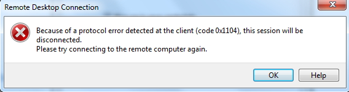
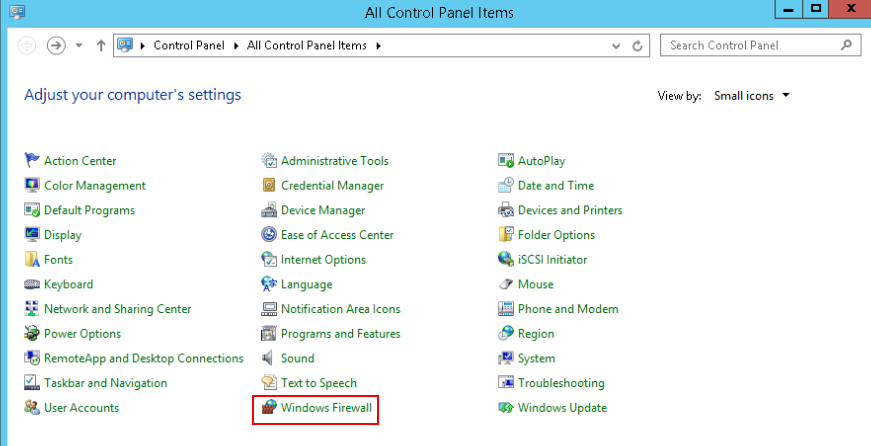
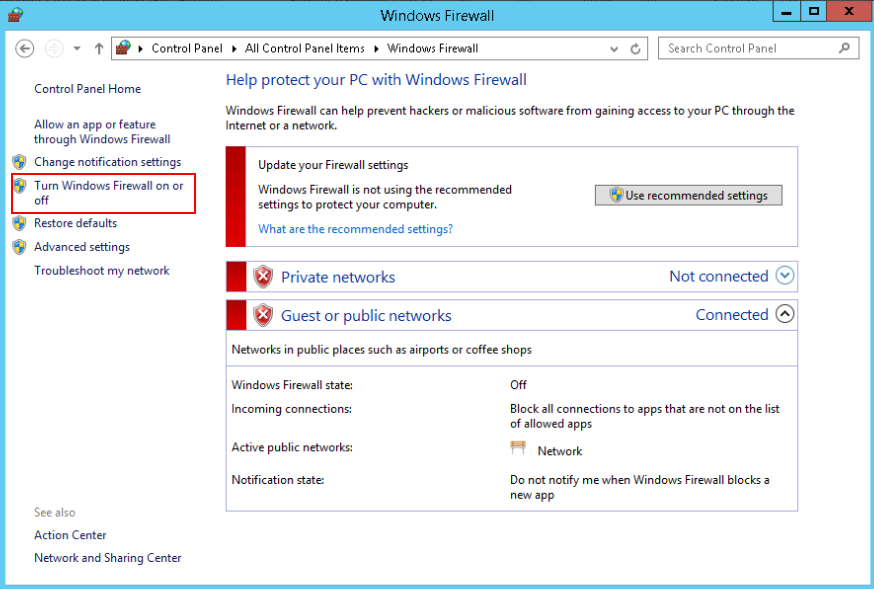
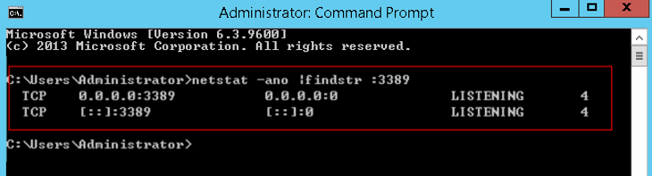
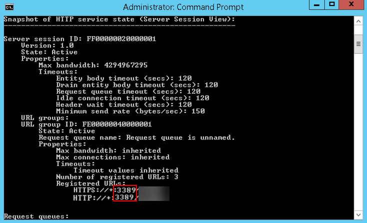
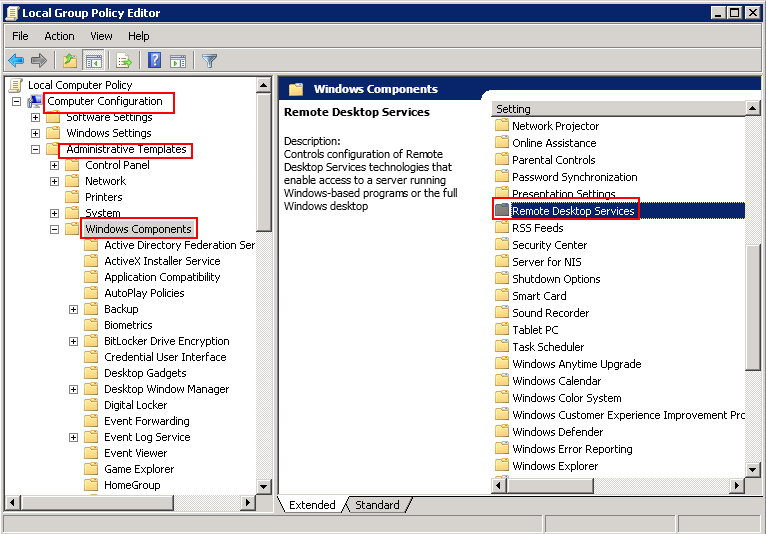
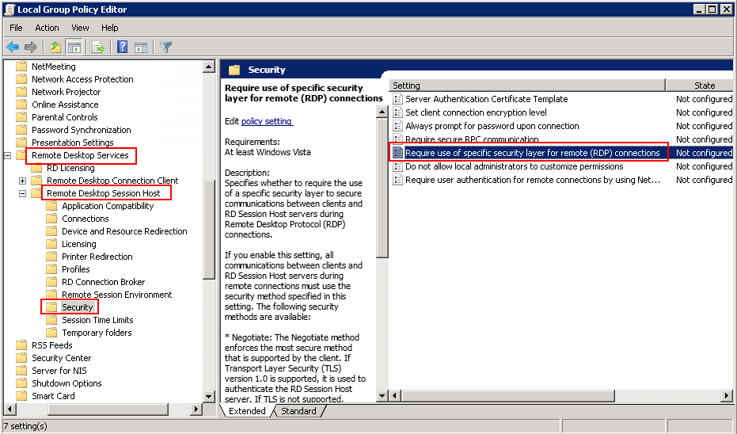
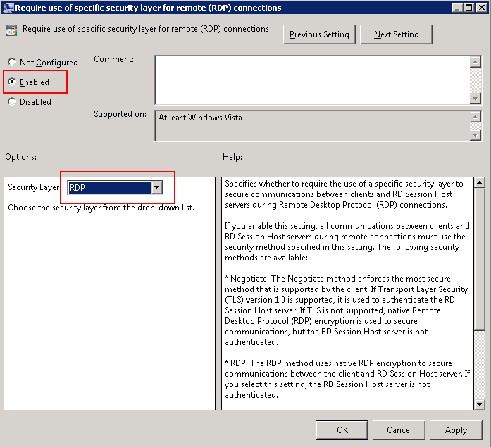
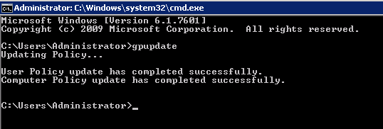

Symptom
The system displays an error message indicating that a protocol error (code: 0x1104) is detected when you use MSTSC to access an ECS running Windows Server 2008.
Figure 1 Protocol error (code: 0x1104)

Possible Causes
- Port 3389 of the security group on the ECS is disabled.
- The firewall on the ECS is disabled.
- Port 3389 on the ECS is used by other processes.
- The Remote Desktop Session Host is incorrectly configured.
Solution
- Check security group settings.
Check whether port 3389 is allowed in inbound direction. If it is allowed, go to 2.
- Check whether the firewall is disabled:
- Log in to the Windows ECS.
- Click the Windows icon in the lower left corner of the desktop and choose Control Panel > Windows Firewall.

- Click Turn Windows Firewall on or off.
View and set the firewall status.

If the firewall is enabled, go to 3.
- Log in to the ECS using VNC and check the port.
- Open the cmd window and run the following command:
netstat -ano |findstr: 3389
Figure 2 Checking port 3389
As shown in Figure 2, port 3389 is used by the process with ID of 4.
- Open Task Manager and find the process with ID of 4 is the System process.
- Generally, the IIS and SQL Server run as the System process. Run the following HTTP command for further check.
netsh http show servicestate
Figure 3 Checking System process

- If port 3389 is used by HTTP protocols, it indicates that the port is used by IIS.
- Enter http://127.0.0.1:3389 in the address box of the browser and press Enter. Check whether the website can be visited normally.
- Change the port used by IIS and restart IIS.
- If no error occurs during the preceding steps, go to step 5 to check whether error 0x1104 is caused by the configuration of Remote Desktop Session Host.
- Check the remote desktop session host configuration.
- Log in to the ECS using VNC.
- Open the cmd window and enter gpedit.msc.
- Click OK to start Local Group Policy Editor.
- Choose Computer Configuration > Administrative Templates > Windows Components > Remote Desktop Services.
Figure 4 Remote Desktop Services

- Remote Desktop Session Host > Security.
Figure 5 Remote (RDP) Connection requires the use of the specified security layer

- Set Require use of specific security layer for remote (RDP) connections to Enabled and Security layer to RDP.
Figure 6 Setting security layer

- Click OK.
- After the configuration is complete, open the cmd window.
- Run the following command to update the group policy:
gpupdate
Figure 7 Updating the group policy
